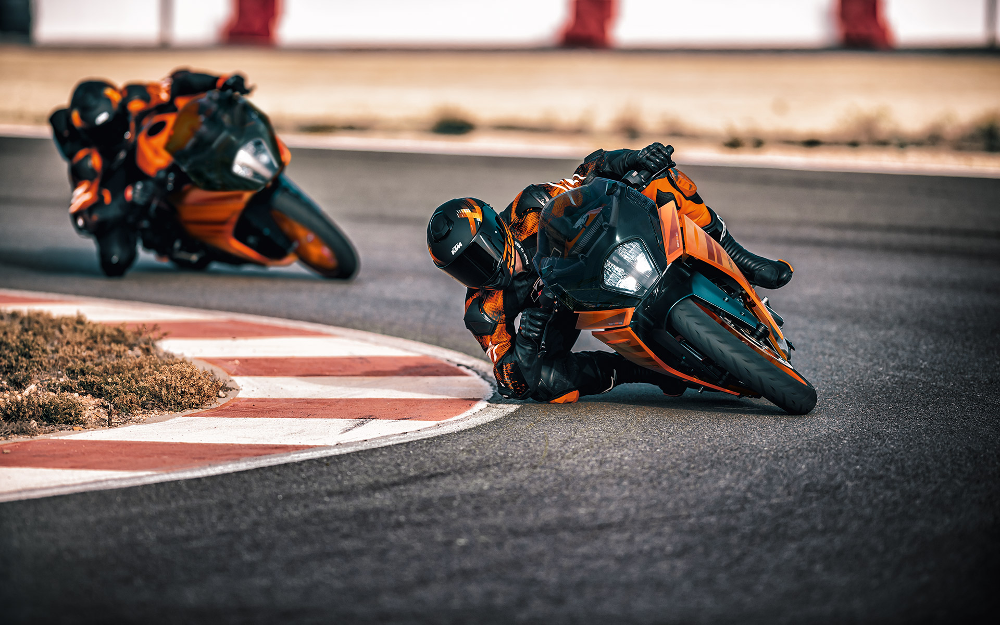

ALAPÁR: 2,700,900.00 HUF
A 2024-es KTM RC 390 egy nagy teljesítményű Supersports gép, melynek gyökerei szilárdan a versenypályán vannak. A lenyűgöző technológiai csomaggal, valamint a versenyből származó stílussal, kezelési jellemzőkkel és addiktív teljesítmény-leadással a KTM RC 390 egy valódi versenyző, kétségtelen származású.
A KTM RC 390 a bevált, 373 köbcentis, folyadékhűtéses, egyhengeres négyütemű motort használja a maximális hatás érdekében. A felülvizsgált motorleképezés, a jobb nyomatékadatok és a simább, kemény teljesítményleadás azt jelenti, hogy ez a korszerű erőforrás páratlan teljesítményt nyújt.

A nagyobb légdoboznak, a megnövelt nyomatéknak és az ultra-sima gázreakciónak köszönhetően a KTM RC 390 rakétával leszáll a vonalról, és pólushelyzetbe száll. A Ride-by-Wire rendszer azt is jelenti, hogy a pódiumra lép a pontosabb motorfeltérképezéssel, a kipörgésgátlóval és az opcionális Quickshifter+ további előnyeivel.
A négy szelep, a dupla felső bütykök és az ultrakemény szénbevonatú bütykös karok azt jelentik, hogy a KTM RC 390 hengerfeje nagyobb teljesítményt ad, de megőrzi legendás megbízhatóságát.
A MotoGP™ RC16 formatervezési jegyeit átvéve a KTM RC 390 kipufogója rozsdamentes acélból készült, alumínium hangtompítóval ellátott fejlécekkel büszkélkedhet, amelyek nem csak az alkatrésznek látszanak, de a KTM RC 390-nek egy határozott, torokhangú dübörgést is kölcsönöz a fogaskerekeken keresztül. a piros vonalra.
Megakadályozza a hátsó kerék blokkolását erős lassításkor, a csúszókuplung kinyílik, ha túl nagy a motor visszanyomatéka, de a tengelykapcsoló rugók erejével záródik is, amikor rákerül a gázkarra. Ez megakadályozza a hátsó kerék nemkívánatos csattanását, és maximális irányítást biztosít – ugyanakkor lehetővé teszi, hogy a tengelykapcsoló kart alig nyomva lehessen működtetni.
A motoron belüli jobb légáramlás lehetővé teszi, hogy a KTM RC 390 hűvösebben működjön, így optimális teljesítményhőmérsékletet biztosít a csúcsnak, körről körre eléréséhez.
| MOTOR | ALVÁZ |
|---|